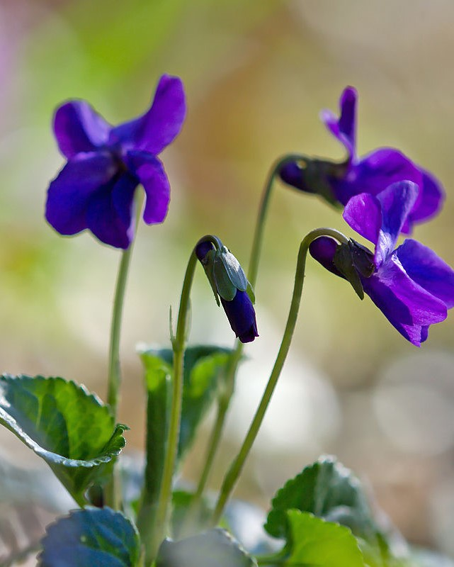
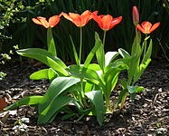
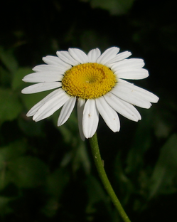

| Atirgul (Rosa) – raʼnodoshlar turkumining xushmanzara oʻsimlik sifatida ekiladigan bir qancha turiga xalq tomonidan qoʻyilgan umumiy nom. Bu turkumning yovvoyi holda oʻsadigan turlari xalqda raʼno, naʼmatak, qirq ogʻayni va itburun nomlari bilan maʼlum. Osiyo, Yevropa, Amerika mamlakatlarida keng tarqalgan. Atirgulning Yer yuzida 250 – ZOYU turi, 25 mingdan ortiq navi bor. Oʻzbekistonda 19 turi, 600 dan ortiq navi oʻstiriladi. | ||
|  | Binafsha (Viola), gunafsha — gunafshadoshlarga mansub, koʻp yillik oʻtsimon oʻsimlik, ekiladigan gul. B. Shim. yarim sharning oʻrta mintaqalarida tarqalgan. 500 ga yaqin turi maʼlum. Oʻzbekistonda 14tayovvoyi, 3 madaniy turi oʻstiriladi. Erta bahorda ochiladi. Poyasi yer bagʻirlab oʻsadi. Gullari yirik, toʻq safsar, oq, sariq, havorang, xushboʻy hidli. B. yer tanlamaydi, salqin joylarda, shuningdek qishda berk joylarda ham oʻsadi. Asosan, urugʻidan, ayrim turlari ildiz poyasini boʻlib ekish bilan koʻpaytiriladi. Xushboʻy B. (V. odarata)ning guli (0,04%) va bargi (0,05%)dan efir moyi olinadi. B.ning bu turi Qrimda koʻp ekiladi. | |
|  | Lola (Tulipa) — loladoshlar oilasiga mansub koʻp yillik oʻsimliklar turkumi, manzarali ekma gul. Yer yuzida uning 1400 ga yaqin, jumladan, Yevrosiyoda 100 dan ortiq, Oʻrta Osiyoda 64 turi tarqalgan. Lolalar piyozli bahori oʻsimlik hisoblanadi, gulchilikda muhim ahamiyat kasb etadi. Koʻpgina mamlakatlar qatorida Niderlandiyada va Oʻrta Osiyoda lola koʻproq yetishtiriladi. Oʻzbekistonning adir va togʻlarida lolaning yovvoyi 25 turi usadi. Lolaning qizil L (T. greigii) va targil lola (T. fosteriana) xili gullarining yirik va nafisligi bilan boshqa lolalardan farq qiladi. | |
|  | Anthemis, Matricaria, Bellis, Leucanthemum va Tripleurospermum kabi turli avlod o'simliklarining umumiy nomi romashka oilasiga mansub deb (Asteraceae) tasniflanadi . | |
| 7-TJBAKT-21 guruh talabasi Turg'unboyev Abrorjon | ||